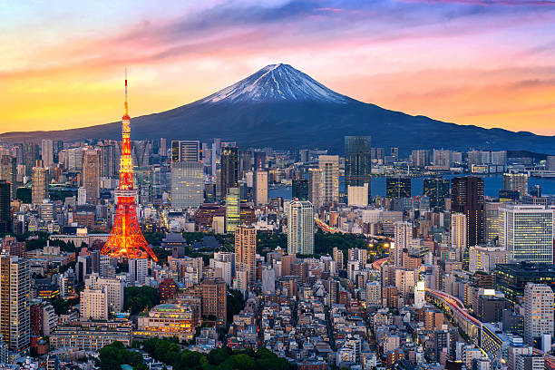

París, Francia
Descripción: Conocida como la ciudad del amor, famosa por la Torre Eiffel y su historia cultural.
Ubicación: Capital de Francia, en Europa occidental.

New York, EE.UU.
Descripción: Una de las ciudades más importantes del mundo, conocida por Times Square y Central Park.
Ubicación: Costa este de Estados Unidos.

Tokio, Japón
Descripción: Mezcla de tradición y tecnología, con templos históricos y rascacielos modernos.
Ubicación: Capital de Japón, en Asia.